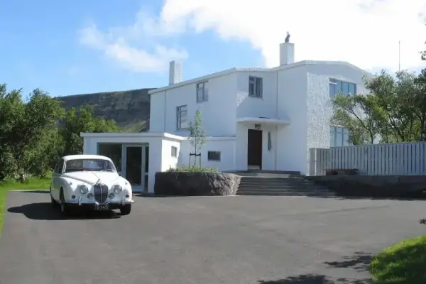
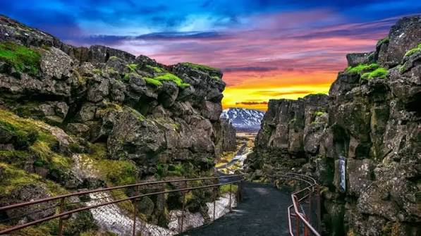
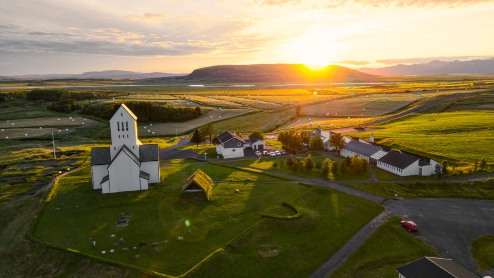
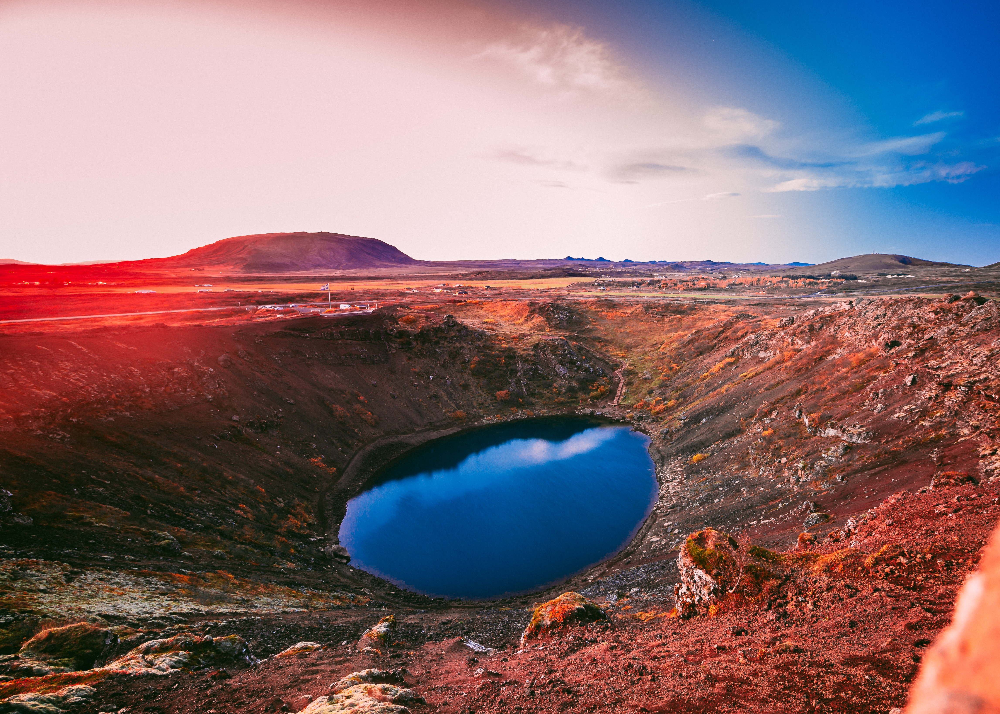

Gljúfrasteinn
Gljúfrasteinn var heimili Halldórs Laxness, eins frægasta rithöfundar Íslands.
Lesa meiraFallegustu náttúruperlur Íslands
Gullni hringurinn er ein vinsælasta ferðamannaleið á Íslandi. Þar er hægt að skoða fallega náttúru, sögulega staði, fossa og hveri. Þekktustu staðirnir eru Þingvellir, Gullfoss og Geysir. Einnig er hægt að heimsækja Gljúfrastein, Skálholt og Kerið.

Gljúfrasteinn var heimili Halldórs Laxness, eins frægasta rithöfundar Íslands.
Lesa meira
Þingvellir eru þjóðgarður og einn merkasti sögustaður landsins.
Lesa meira
Gullfoss er einn þekktasti foss Íslands og er staðsettur í Hvítá.
Lesa meira
Geysir er frægt hverasvæði þar sem Strokkur gýs reglulega.
Lesa meira
Skálholt er sögulegur staður og var lengi eitt helsta biskupssetur Íslands.
Lesa meira
Kerið er eldgígur sem er þekktur fyrir rauðleitar hlíðar og blágrænt vatn.
Lesa meiraGljúfrasteinn stendur í Mosfellsdal og var heimili Halldórs Laxness og fjölskyldu hans. Í dag er húsið safn þar sem hægt er að kynnast lífi og verkum rithöfundarins. Halldór Laxness fékk Nóbelsverðlaunin í bókmenntum árið 1955.
Skálholt er einn merkasti kirkju- og sögustaður Íslands. Þar var biskupssetur í margar aldir og mikilvæg miðstöð menntunar. Í dag er þar kirkja og staðurinn er vinsæll meðal ferðamanna.
Kerið er eldgígur í Grímsnesi sem myndaðist fyrir nokkrum þúsund árum. Gígurinn er þekktur fyrir fallega liti og stöðuvatnið sem er í botni hans. Hægt er að ganga í kringum gíginn og njóta útsýnisins.